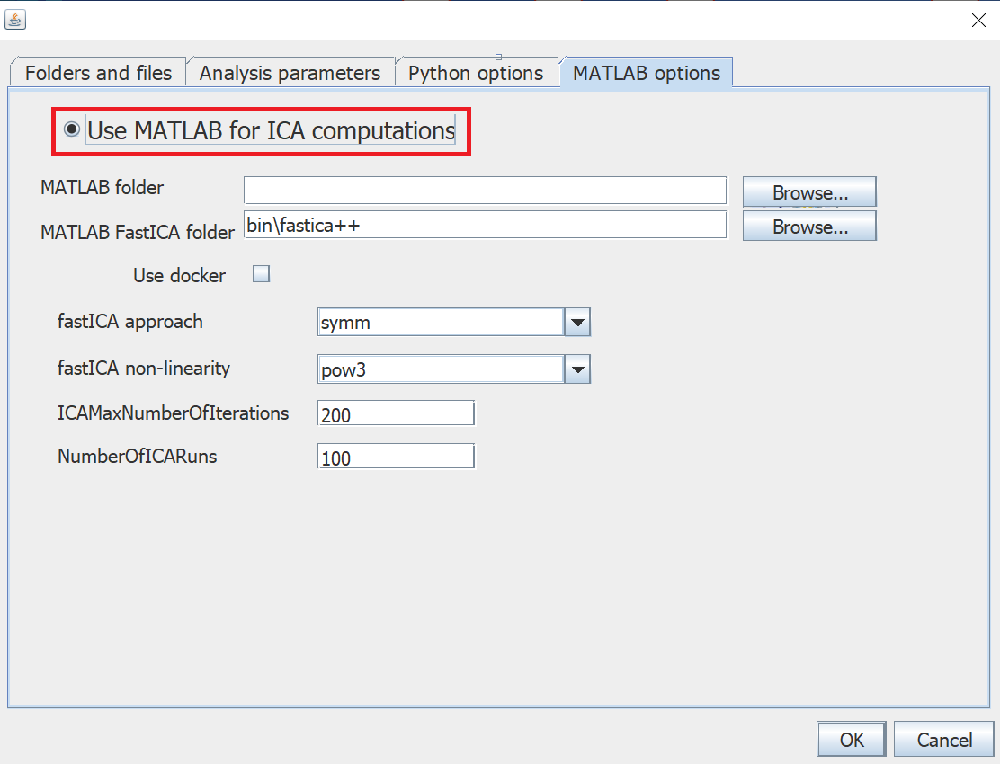
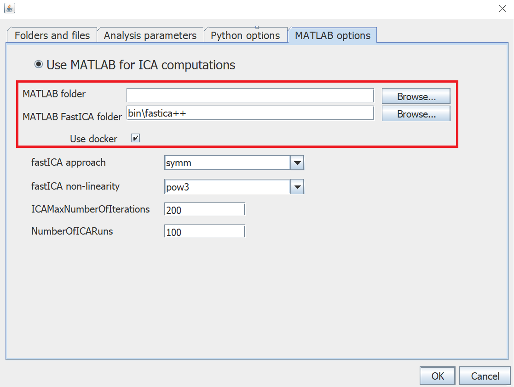
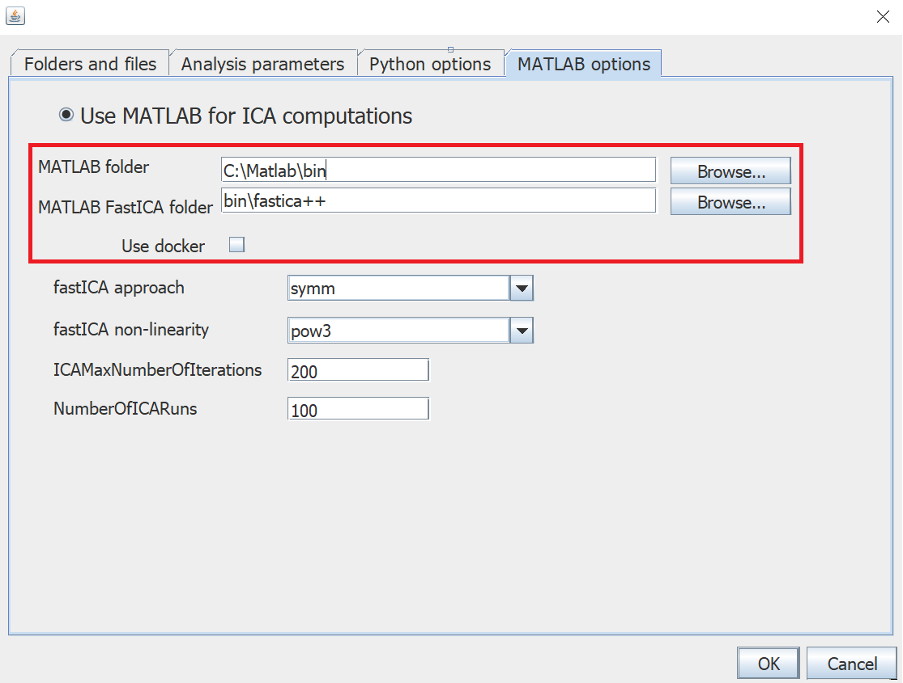

Here we provide details on the configuration of MATLAB for BIODICA. The python implementation of the stabilized-ica package is now used by default but we still provide a MATLAB option only for historical and compatibility reasons.
-
Run install.bat (Windows) or install.sh in your local root folder for BIODICA (this will copy the MATLAB RunTime binaries). To do so, open the terminal and run the following command :
Windows
local_path_to_root_folder\install.batOther operating systems
local_path_to_root_folder\install.sh -
Select the “use MATLAB for ICA computations” option in BIODICA Navigator parameters and press “OK”.
 You can also directly modify the config file located in the local root folder for BIODICA:
ICAImplementation = matlab -
For the last step of the configuration of MATLAB, you have three options
-
If you can use docker (recommended) for performing Matlab computations (then MATLAB or binaries are not required and no configuration of MATLAB Runtime is needed) then execute first the following command line in your terminal
docker pull auranic/biodicaand select the “Use docker” option in BIODICA Navigator parameters or directly modify the config file with
UseDocker = true - If you already have an installed MATLAB, then you can specify the path to MATLAB bin folder (e.g
C:\Matlab\bin) in BIODICA Navigator parameters or directly in the config file withMATLABFolder = C:\Matlab\bin -
You can also leave MATLABfolder option empty and the “Use docker” option unselected.
You will then have the responsability to download and configure the MATLAB RunTime library, specify if necessary the path to the Runtime library files such that the executables in bin/doICA/ folder could be run without “library not found” message. Under Windows, the installer will take care of this automatically, while under Linux it can require some setting of the environment variables.
Windows: Link to the corresponding version of MATLAB Runtime (version 8.5, 64 bit)
Linux: Link to the corresponding version of MATLAB Runtime (version 8.1, 64 bit)
-